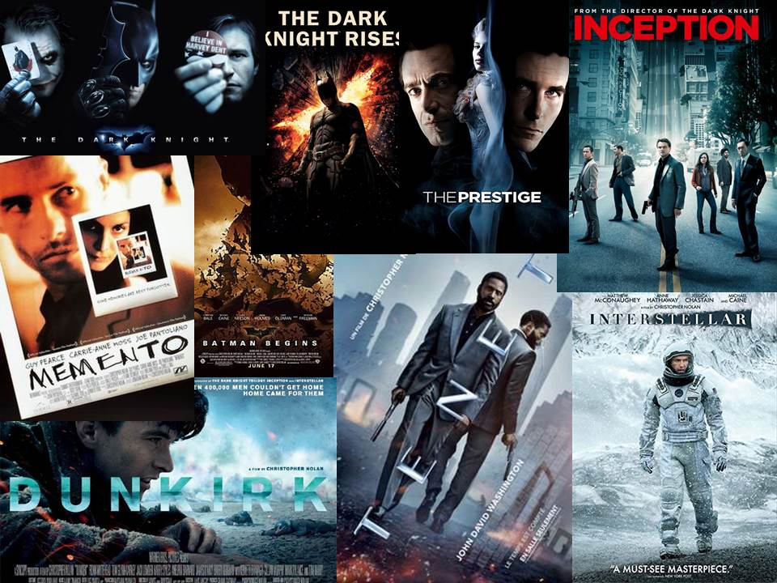
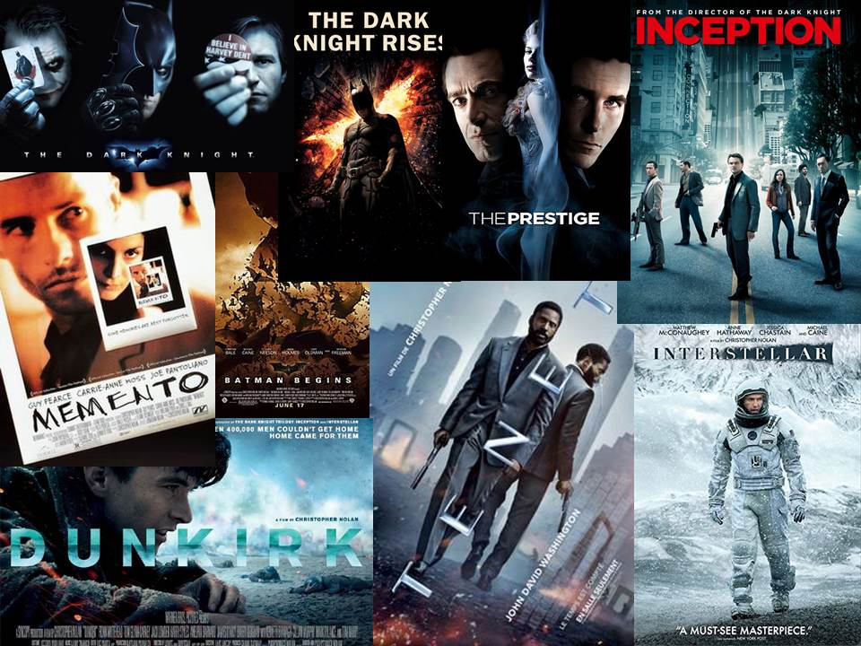

Beyoncé

Adele: When We Were Young
When we were young music videoMovies of Christopher Nolan
Ik hou van om nieuwe plekken te ontdekken, zowel binnen als buiten land.
Wanneer ik een vrije dag heb, ga ik graag wandelen in zowel stadsomgevingen
als de natuur van die plaatsen waar ik nog nooit eerder ben geweest.
Ik zwem heel graag en ga af en toe baantjes trekken met vrienden.
Ik vind het leuk om te leren programmeren en kijk af en toe naar
YouTube-video's met tutorials die ik kan volgen.
Beyoncé
Adele: When We Were Young
When we were young music videoMovies of Christopher Nolan
